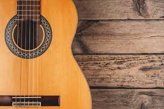
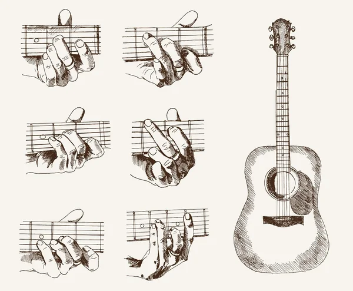

Leccion 1
Partes de la Guitarra

Acordes Básicos
Aprende los acordes principales.
.
.
Partes de la Guitarra
Aprende los acordes principales.
.
Contenido de la lección 1...
Historia de la guitarra La guitarra procede del instrumento clásico llamado lira que era utilizada en la antigüedad clásica, y es probable que fuese inventada por los hititas alrededor de 1500 a.C. y que los poetas griegos la usaran para acompañar sus versos. En algunas ocasiones para tocarla utilizaban púas, al igual como se hace con las guitarras. Para los alrededores de 3400 años atrás, en Asia menor y Oriente Medio aparecieron los primeros indicios de un instrumento parecido a la guitarra. Después, en el año 1000 a. C en Siria nace la kettarah que era un instrumento musical con cuerda, formado por una caja de madera con forma ovalada, pero no tenía mástil. En la India este instrumento fue llamado sitar y es de esta palabra que procede el término guitarra. Para el siglo XIII se presenta la primera versión de la guitarra, la cual traía tres pares de cuerdas y una adicional, que era la encargada de proporcionar sonidos un poco más agudos. Para el siglo XIV unos músicos medievales de origen francés como Eustache Deschamps y Guillaume de Machaut, hacían obras musicales donde empelaban el término guiterna que al traducirlo era guitarra. En el siglo XVI especialmente en España, se hace un gran número de composiciones y obras para guitarra. Aquí fue cuando este instrumento comenzó a hacerse popular y muy usado por los músicos como acompañamiento de otros instrumentos. Para esta época de la historia los árabes le añadieron el mástil y le llamaron al’ud, que significa “la madera”, y luego los españoles convirtieron en laúd, también, se desarrolla la técnica de rasgueo de la guitarra y se endereza el mástil quebrado del laúd para dar paso a la vihuela. historia de la guitarraEn esta época la guitarra no participaba en conciertos de música clásica por no ser adecuada para ese género musical, a diferencia de la vihuela, que era tocada en todo el imperio español, en capillas, tabernas y ambientes cortesanos. A comienzos del siglo XVIII, Jacob Otto le hace una importante modificación al modelo de guitarra que existía para ese momento y le agrega una cuerda más. Por esta razón, este instrumento tiene seis cuerdas, además, existe un cambio en la afinación moderna y en la forma de tocarla, al igual que se le hicieron cambios en la estructura que la convirtieron en la guitarra clásica. En el año 1850 fue creada la primera guitarra española por el español Antonio de Torres Jurado; su diseño parte de la modificación de la mandolina creada por 1779 por Gaetano Vinaccia. El instrumento creado por Jurado sirvió de base para crear la guitarra moderna como es conocida actualmente. En el siglo XIX la guitarra se adaptada para la técnica de punteado y rasgueado, pasando a ser un instrumento de concierto, también llega a Estados Unidos donde le realizan cambios en la estructura y surge la guitarra flamenca. Al llegar el siglo XX pasa a ser uno de los instrumentos más importantes y más usado en todo el mundo. Esto gracias a que se adapta a cualquier tipo de ambiente y por ser muy fácil de usar. En esta parte de la historia de la guitarra aparece la guitarra eléctrica gracias a los avances tecnológicos y fue creada por el estadounidense Leo Fender; se convirtió en el protagonista del jazz, el rock and roll, el blues, el funk, el punk, el pop y el metal. La guitarra a través de los años ha sufrido variaciones en su forma, a parte del cambio del número de cuerdas. Esta se ha ido adaptando a las necesidades del intérprete hasta llegar a su forma actual. El instrumento se ha fabricado prácticamente en su totalidad en madera. En la actualidad se utilizan diferentes tipos de madera, entre ellas está la caoba, el palisandro de la India, el abeto, el cedro de Canadá, el ciprés, el ébano y el pino. La guitarra española La guitarra española, guitarra clásica o guitarra criolla, como se le conoce en algunos países de América Latina, tiene un origen muy antiguo que comienza a tener importancia a partir del renacimiento. Este instrumento musical pertenece a la familia de los cordófonos. Para la época del renacimiento se desarrolla el repertorio contrapuntístico de los instrumentos de cuerda pulsada; en España y América se usaba la vihuela y en el resto de Europa el laúd. Estos serían de acuerdo con la historia los orígenes de la guitarra clásica. En el siglo XIV aparece el prototipo de lo que es la guitarra española actualmente; el instrumento era utilizado en España por el pueblo, con la finalidad de acompañar bailes populares y canciones. Para este momento, la vihuela se convirtió en el instrumento de cuerda favorito de los músicos cortesanos. El auge de la guitarra española se presenta durante el siglo XV, cuando empiezan a imprimir los primeros libros de música para vihuela muy popular para esa época. Este instrumento se ha tocado en muchas situaciones, como en los reinos cristianos de Europa y de España. En este siglo existía un instrumento que se le conocía como guitarra y tenía cuatro pares de cuerdas, la forma era redondeada y la caja tenía forma abombada, muy parecida a la vihuela. En los reinos musulmanes de España se usaba la guitarra morisca o guitarra, que tenía tres pares de cuerdas y puede ser consideradas como la precursora directa de la guitarra española. Para el siglo XVI de la historia de la guitarra se incorporó una quinta cuerda. Este hecho ha sido atribuido al poeta andaluz Vicente Espinel, por ser un estudioso y un aficionado de este instrumento. Durante este siglo estuvieron presentes las guitarras de cuatro y cinco órdenes. La guitarra de cinco órdenes se instauró como modelo en toda Europa por la obra “Guitarra española de cinco órdenes”, del el catalán Joan Carles Amat publicada en 1596, esta obra enseña el tañer y templar rasgado. Durante todo el siglo XVI fue intenso el apogeo de la vihuela en la música instrumental española, pero a finales de este siglo, la vihuela fue sustituida en los salones por la popular guitarra, época en que la cultura renacentista le da paso al Barroco. En el siglo XVII la guitarra española se convierte en el instrumento más usado en los diferentes círculos musicales de casi toda Europa y es a partir de este momento que comienza a fortalecerse el uso de la guitarra. En el siglo XVIII se le hace una serie de cambios físicos a la guitarra española, los cuales sirven para mejorar sus condiciones sonoras y técnicas, adquiriendo muchas de las características básicas que tiene la guitarra actualmente.
Contenido de la lección 3...